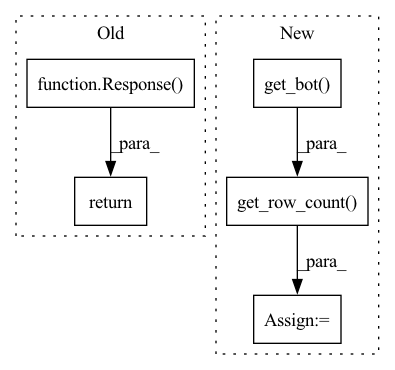

Pattern ID :14818

Before Change
List end user logs.
return Response(
data=MeteringProcessor.get_logs(
current_user.account, start_idx, page_size, start_date, end_date,
metric_type=metric_type, bot=current_user.get_bot()
)
)
@router.post("/user/logs/{metric_type}", response_model=Response)
async def add_end_user_metrics(
After Change
current_user.account, start_idx, page_size, start_date, end_date,
metric_type=metric_type, bot=current_user.get_bot()
)
row_cnt = mongo_processor.get_row_count(Metering, current_user.get_bot())
data = {
"logs": logs,
"total": row_cnt
}
In pattern: SUPERPATTERN
Frequency: 3
Non-data size: 5
Instances
Fragment ID: 49343260
Project Name: digiteinfotech/kairon
Commit Name: 1d87bfdfc7eaee32830f1794a794a4298fd8450c
Time: 2022-09-07
Author: 78532321+nupur-khare@users.noreply.github.com
File Name: kairon/api/app/routers/bot/metric.py
M Class Name: AnonimousClass
N Class Name: AnonimousClass
M Method Name: get_end_user_metrics(6)
N Method Name: get_end_user_metrics(6)
M Parent Class:
N Parent Class:
M File Name: kairon/api/app/routers/bot/metric.py
N File Name: kairon/api/app/routers/bot/metric.py
M Start Line: 39
M End Line: 44
N Start Line: 40
N End Line: 51
'>
Before Change
List model testing logs.
logs = ModelTestingLogProcessor.get_logs(current_user.get_bot(), log_type, reference_id, start_idx, page_size)
return Response(data=logs)
@router.get("/endpoint", response_model=Response)
async def get_endpoint(current_user: User = Security(Authentication.get_current_user_and_bot, scopes=ADMIN_ACCESS)):
After Change
List model testing logs.
logs = ModelTestingLogProcessor.get_logs(current_user.get_bot(), log_type, reference_id, start_idx, page_size)
row_cnt = mongo_processor.get_row_count(ModelTestingLogs, current_user.get_bot())
data = {
"logs": logs,
"total": row_cnt
}
'>
Fragment ID: 49343261
Project Name: digiteinfotech/kairon
Commit Name: 1d87bfdfc7eaee32830f1794a794a4298fd8450c
Time: 2022-09-07
Author: 78532321+nupur-khare@users.noreply.github.com
File Name: kairon/api/app/routers/bot/bot.py
M Class Name: AnonimousClass
N Class Name: AnonimousClass
M Method Name: model_testing_logs(5)
N Method Name: model_testing_logs(5)
M Parent Class:
N Parent Class:
M File Name: kairon/api/app/routers/bot/bot.py
N File Name: kairon/api/app/routers/bot/bot.py
M Start Line: 611
M End Line: 611
N Start Line: 620
N End Line: 626
'>
Before Change
Get data importer event logs.
logs = list(DataImporterLogProcessor.get_logs(current_user.get_bot()))
return Response(data=logs)
@router.post("/validate", response_model=Response)
async def validate_training_data(
After Change
Get data importer event logs.
logs = list(DataImporterLogProcessor.get_logs(current_user.get_bot(), start_idx, page_size))
row_cnt = mongo_processor.get_row_count(ValidationLogs, current_user.get_bot())
data = {
"logs": logs,
"total": row_cnt
}
'>
Fragment ID: 49343262
Project Name: digiteinfotech/kairon
Commit Name: 1d87bfdfc7eaee32830f1794a794a4298fd8450c
Time: 2022-09-07
Author: 78532321+nupur-khare@users.noreply.github.com
File Name: kairon/api/app/routers/bot/bot.py
M Class Name: AnonimousClass
N Class Name: AnonimousClass
M Method Name: get_data_importer_logs(3)
N Method Name: get_data_importer_logs(1)
M Parent Class:
N Parent Class:
M File Name: kairon/api/app/routers/bot/bot.py
N File Name: kairon/api/app/routers/bot/bot.py
M Start Line: 905
M End Line: 910
N Start Line: 920
N End Line: 932